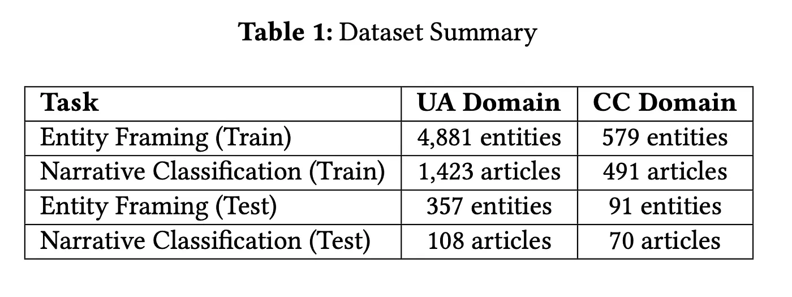
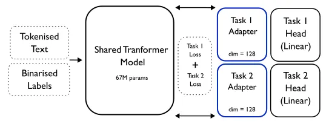

Multi-Task Learning as Inductive Bias Under Distribution Shift
A model trained on one domain and deployed in another will lose performance. The question is whether the architecture itself can act as a structural buffer.
A model trained on one domain and deployed in another will lose performance. This is well known. What is less well understood is why — because "distribution shift" is not one thing. The input vocabulary changes (lexical shift). The label frequencies change (label shift). The label semantics themselves may shift. These effects compound, and most evaluations do not disentangle them.
The standard response is more data, larger models, or domain adaptation. These work, but they treat the symptom. The question this thesis asks is whether the architecture itself — specifically, multi-task learning — can act as a structural buffer against degradation, by forcing the encoder to learn representations that serve more than one objective.
Experimental Setting
Two NLP classification tasks drawn from the SemEval 2025 shared task on persuasion detection: entity framing (assigning roles to named entities in news text) and narrative classification (identifying overarching discourse strategies in articles). Both tasks are multi-label and hierarchical — the challenging end of the classification spectrum.

Two domains — Ukraine conflict and climate change — with verified distributional divergence: Jensen-Shannon divergence of 0.41 on token distributions, cosine distance of 0.64 on sentence embeddings, and non-overlapping narrative label sets across domains.

Three architectures compared: single-task learning (STL), multi-task learning with hard parameter sharing (MTL), and a hybrid variant with task-specific adapter modules (MTL-A). Each configuration evaluated over 20 random seeds with Wilcoxon signed-rank tests for significance.

What I Tested
The thesis is structured around four controlled ablations. Each one isolates a different mechanism — to answer not just whether MTL helps, but under what conditions and why.
1. Cross-domain training
One task trained on domain A, the other on domain B. Does the auxiliary task's domain signal transfer to the primary task?
Finding: training entity framing on climate change data while training narrative classification on Ukraine data recovered entity framing performance on Ukraine evaluation metrics to the level of a model trained directly on Ukraine. The auxiliary task acted as an indirect source of domain-relevant signal — a form of cross-task, cross-domain data augmentation.
2. Data duplication
The most important control. MTL models see roughly twice the data of STL models (two tasks' worth of labelled examples passing through a shared encoder). Is the MTL gain just a data volume effect? To test this, I duplicated the STL training data to match the MTL token count.
Finding: duplication does improve performance, particularly on rare labels. But MTL configurations still outperform the duplicated baseline on the tasks that benefit most from multi-task training — confirming that task interaction contributes something beyond additional supervision volume.
3. Label granularity
The label taxonomy was varied across four configurations: both tasks fine-grained, one coarse / one fine, and both coarse.
Finding: when both tasks use coarse labels and the classification problem becomes more balanced, STL outperforms MTL. Hard parameter sharing is most beneficial precisely when the problem is hardest — high label imbalance, data scarcity, and large distributional shift. Under easier conditions, the specialisation of a single-task model wins.
4. Cross-domain evaluation
All models were evaluated on held-out test sets from both domains, regardless of training domain. This surfaces asymmetric transfer: models trained on one domain generalised to the other more effectively than the reverse, suggesting that domain informativeness — not just domain similarity — drives transfer quality.
Key Findings
MTL helps most when things are hardest. Under data scarcity, extreme class imbalance, and large distributional shift, multi-task models recovered performance that single-task models lost. The clearest example: narrative classification trained on Ukraine data alone scored 0.00 micro-F1 on climate change test data under STL — complete failure. Under MTL, the same encoder produced 0.24. Still low, but a meaningful recovery from zero.
MTL is not universally better. In stable, data-rich settings with well-covered label distributions, single-task models performed competitively or better. The negative transfer observed in entity framing (2–3% micro-F1 degradation under MTL) was consistent and statistically significant in several configurations. MTL is a specific tool for specific failure modes, not a universal upgrade.
The data duplication ablation matters. Without it, the MTL results would be ambiguous — the gains could be explained by exposure to more labelled data, not by task interaction. Isolating these two effects is what allows the thesis to make a causal claim about the role of multi-task structure, rather than just reporting correlations.
Label granularity mediates the effect. When the auxiliary task uses fine-grained labels (more imbalanced, harder), MTL provides a stronger benefit. When labels are coarsened (more balanced, easier), the MTL advantage diminishes or reverses. This suggests that MTL's regularisation effect is most valuable when the model is at greatest risk of overfitting to dominant classes.
Methodology Notes
Evaluation over 20 seeds (10 per ablation) with mean ± standard deviation reported for all metrics. Statistical significance assessed via two-sided Wilcoxon signed-rank tests. Three complementary metrics: micro-F1 (overall accuracy, sensitive to frequent classes), macro-F1 (per-class average, sensitive to rare classes), and exact match ratio (strictest — every label correct for a given instance).
The full multi-label, hierarchical label taxonomy was preserved rather than simplified to multi-class. This is a deliberate methodological choice: it makes the problem harder but the results more representative of real-world classification tasks where label spaces are large, imbalanced, and structured.
Post-hoc interpretability via SHAP token attributions was included for completeness but treated with appropriate caution given the known limitations of post-hoc explanations for transformer models.
Relevance to Applied ML
The project addresses a problem that recurs in every production ML system: your training data does not perfectly represent the data you will encounter at deployment. The findings have direct implications for practitioners deciding between single-task and multi-task architectures.
Reach for MTL when you have limited labelled data, severe class imbalance, or reason to expect domain shift at deployment. The inductive bias from a related auxiliary task can act as a structural regulariser that simple data augmentation cannot fully replicate.
Stay with STL when you have sufficient, well-distributed training data and a stable deployment domain. The specialisation advantage of a single-task model outweighs the regularisation benefit of MTL in these conditions.
Design your evaluation to isolate mechanisms. An MTL result without a data-volume control is incomplete. An out-of-domain evaluation without disentangling input shift from label shift conflates two different failure modes. The ablation methodology used here — varying one factor while holding others constant — is transferable to any model evaluation pipeline.
This post is a condensed version of my MSc thesis at the University of Amsterdam (2025). The full thesis is available on request. An earlier version was published on Medium.